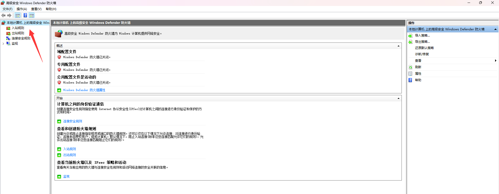
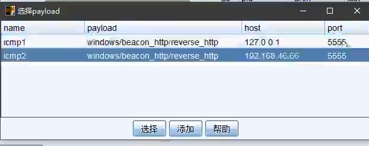

隧道代理总结
反向连接隧道 正向连接代理不出网
# 域防火墙
域防火墙（Domain Firewall）是指在域环境中用于保护域控制器和域成员计算机的防火墙。它是一种网络安全设备或软件，用于监控和控制网络流量，以保护域内的计算机免受未经授权的访问、恶意软件和网络攻击的威胁，可以设置安全策略

功能
1 | 1. 入站/出站规则 : 添加入/出站的访问限制,比如协议、端口、被限制的规则则不能被外界访问或使用,则可以自定义添加/限制 添加规则有了限制那么被限制的网站就不能访问 |
# 组策略配置
域控组策略安全配置
在 Windows 域环境中，组策略（Group Policy）是一种集中管理和配置域成员计算机和用户设置的功能。它允许域管理员通过定义策略来强制执行安全设置、应用程序设置、网络设置等，以确保域内计算机和用户的一致性和安全性
1 | 它是同步的,我在域控上同步域控防火墙的设置,那么其他域内主机也生效,不需要登录到其他域内主机手动设置防火墙,只要域控设置了防火墙,所有域内主机就按照我域控的防火墙 |
# 隧道技术
隧道技术是一种在网络通信中用于在一个网络协议中封装另一个网络协议的方法。它通过在原始数据包的头部添加额外的封装头和封装尾，将原始数据包封装在另一个协议的数据包中进行传输
隧道连接就是更换协议，可能限制的是 TCP, 但是更换其他的协议就可以，如果这台主机就是没用网络的，隧道协议已经不行了，只能采用正向连接，或者反向代理出流量
解决不出网协议上线的问题 (利用其他的出网协议进行封装出网) 可以正常通信但是被防火墙等设置为不能通信但是又需要出网，反向连接反弹 shell
# 代理技术
代理技术解决网络通讯不通的问题 (利用跳板机建立节点后操作) 跳板机是一个中间商 **** 它是由硬性条件决定的，本身网络架构不同所以用代理技术来通网，正反连接皆受用
# 区别共性
代理是内网环境中攻击机无法通讯情况，隧道是被防火墙阻拦了连接防止了某个协议导致.
所以我们在内网协议被封杀的时候使用隧道技术。网络通信不通的时候使用代理技术
目标不出网
代理出网络主动出来，或者我们挂代理主动去连接它 (正向), 如果第二层渗透目标也是不出网的完全封杀，同样可以反向代理出网络给 web 服务器
1 | 攻击机---web服务器(完全不出网络)---sqlserver(完全不出网) |
出网某些协议不出
隧道封装协反弹流量到攻击机 (反向)
1 | 正向连接限制的是入站规则,因为防火墙默认是对入站规则严格一些,入站是我们去访问它,和正常WAF是一样的 |
# 反向连接
- 渗透主机给出网络的情况下并点击木马上线称为反向连接， 正常情况
- 后门生成数据给到本地
2222端口，CS 开启监听端口， 攻击机 CS 可以做出连接响应 - 后门给予主机 2 访问 因为出网， 主机 2 一旦操作给出网络自己给攻击机提供信号
- 反向连接成功上线
# CS 上线
连接后开启监听 监听两个机子 使用 st 模式生成后门，先选择本地 127 如果是直接 2 的话肯定直接封杀了，先转到本地 127, 再使用工具转到指定的 IP 端口封装协议

ping.exe 的文件还是在命令行操作 然后执行后门 cs 成功上线